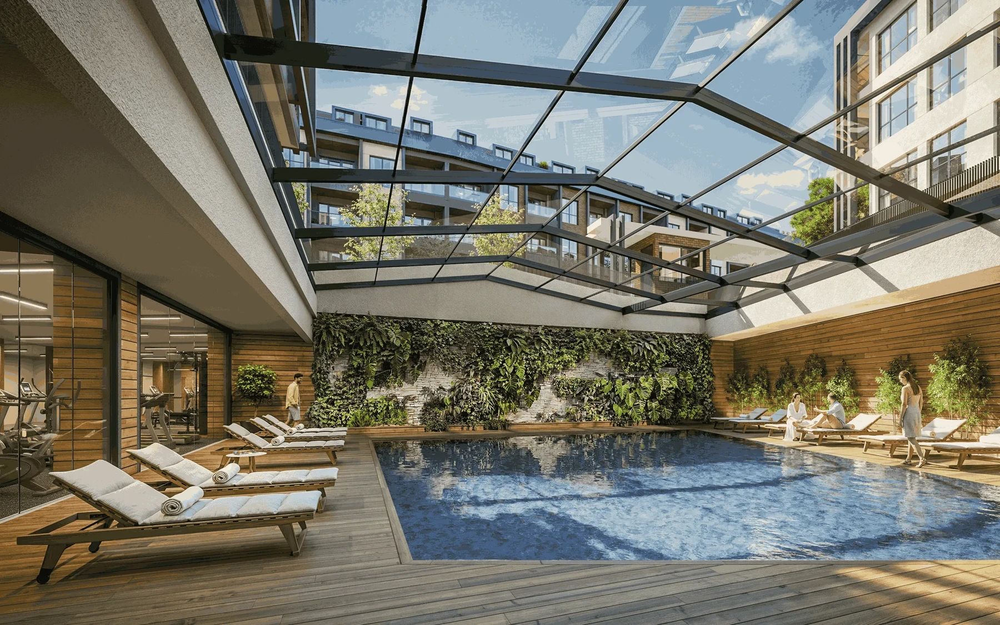

PROJECT OVERVIEW
Ege Yapı Göktürk
A residential project in Göktürk combining low-rise buildings, landscaped courtyards and shared leisure spaces. Its published design places homes close to the Belgrad Forest area.
Construction area33,309 m²
Home options1+1 to 3+1
Architectural characterLow-rise residential
Photo gallery

Official architectural illustrations; these images do not show the current construction condition.
EVERYDAY LIVING
Living spaces
The official presentation includes fitness and spa facilities, children’s play spaces, a pool and smart-home features.
LOCATION AND ACCESS
Göktürk · Eyüpsultan · Istanbul
Göktürk, Eyüpsultan, on Istanbul’s European side. The project presentation connects its location with the Belgrad Forest area.
YOUR NEXT STEP
Choose your home
Request the current apartment selection, price and payment options. Compare the exact unit, view and included services before arranging your purchase.